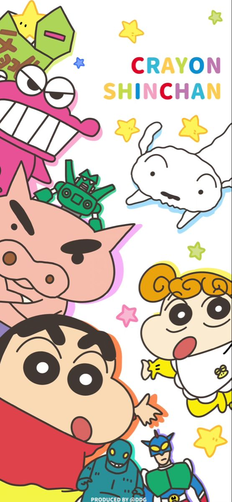
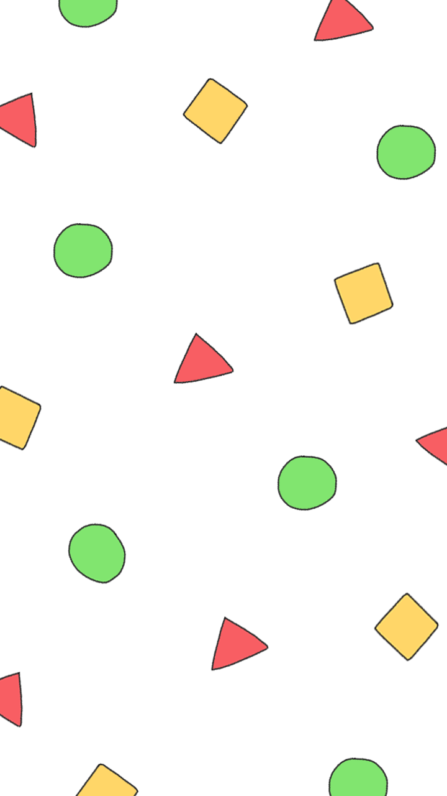

 Crayon Shin-chan is a Japanese manga series written and illustrated by Yoshito Usui. Crayon Shin-chan made its first appearance in 1990 in a Japanese
 Lucky in the Vitello, Phuuz and Dutch dubs, and Whitey in the Funimation
This article needs additional citations for verification. Please help improve this article by adding citations to reliable sources. Unsourced material may be challenged and removed.
This section needs additional citations for verification. Please help improve this article by adding citations to reliable sources in this section. Unsourced material may be challenged and removed.
Voiced by: Akiko Yajima (1992-2018), Yumiko Kobayashi (2018-present), Kath Soucie (English, Vitello dub), Laura Bailey (English, Funimation dub) He is the main character, son of Hiroshi and Misae.